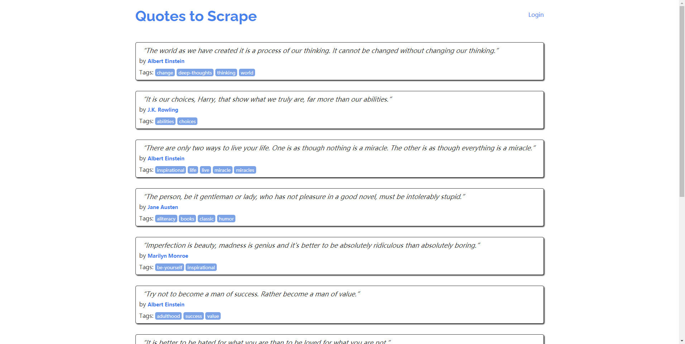
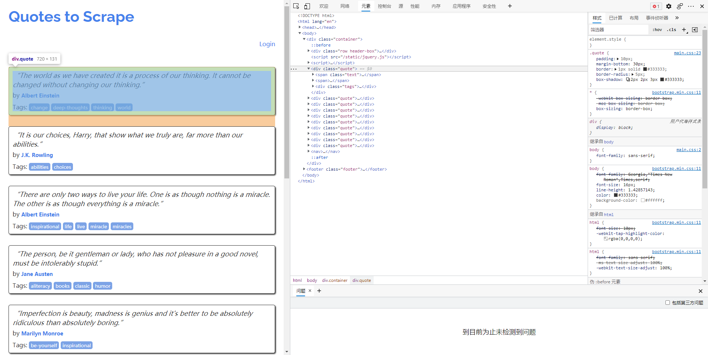
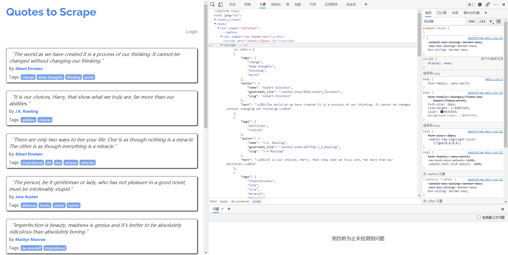

Scrapy爬取动态页面-scrapy-splash
本文最后更新于：2021年9月9日 早上
在现实中，目前绝大多数网站的页面都是动态页面，动态页面中的部分内容是浏览器运行页面中的JavaScript脚本动态生成的，爬取相对困难，这一章来学习如何爬取动态页面。
先来看一个简单的动态页面的例子，在浏览器中打开http://quotes.toscrape.com/js，显示如图所示。

页面中有10条名人名言，每一条都包含在一个<div class="quote">元素中。在scrapy shell环境下尝试爬取页面中的名人名言：
1 | |

爬取失败了，在页面中没有找到任何包含名人名言的<divclass="quote">元素。这些<div class="quote">就是动态内容，从服务器下载的页面中并不包含它们（所以我们爬取失败），浏览器执行了页面中的一段JavaScript代码后，它们才被生成出来。

1 | |
所有名人名言信息被保存在数组data中，最后的for循环迭代data中的每项信息，使用document.write生成每条名人名言对应的<div class="quote">元素。
上面是动态网页中最简单的一个例子，数据被硬编码于JavaScript代码中，实际中更常见的是JavaScript通过HTTP请求跟网站动态交互获取数据（AJAX），然后使用数据更新HTML页面。爬取此类动态网页需要先执行页面中的JavaScript代码渲染页面，再进行爬取。
Splash渲染引擎
Splash是Scrapy官方推荐的JavaScript渲染引擎，它是使用Webkit开发的轻量级无界面浏览器，提供基于HTTP接口的JavaScript渲染服务，支持以下功能：
为用户返回经过渲染的HTML页面或页面截图。
- 并发渲染多个页面。
- 关闭图片加载，加速渲染。
- 在页面中执行用户自定义的JavaScript代码。
- 执行用户自定义的渲染脚本（
lua），功能类似于PhantomJS。
首先安装Splash，在linux下使用docker安装十分方便：
1 | |
安装完成后，在本机的8050和8051端口开启Splash服务：
1 | |
Splash功能丰富，包含多个服务端点，由于篇幅有限，这里只介绍其中两个最常用的端点：
render.html提供JavaScript页面渲染服务。execute执行用户自定义的渲染脚本（lua），利用该端点可在页面中执行JavaScript代码。
Splash文档地址：http://splash.readthedocs.io/en/latest/api.html。
render.html端点
JavaScript页面渲染服务是Splash中最基础的服务:
| 服务端点 | render.html |
|---|---|
| 请求地址 | http://localhost:8050/render.html |
| 请求方式 | GET/POST |
| 返回类型 | html |
render.html端点支持的参数:
| 参数 | 是否必选 | 类型 | 描述 |
|---|---|---|---|
| url | 必选 | string | 需要渲染页面的url |
| timeout | 可选 | float | 渲染页面的超时时间 |
| proxy | 可选 | string | 代理服务器地址 |
| wait | 可选 | float | 等待页面渲染的时间 |
| images | 可选 | interger | 是否下载图片，默认为1 |
| js_source | 可选 | string | 用户自定义的JavaScript代码，在页面渲染前执行 |
下面是使用requests库调用render.html端点服务对页面http://quotes.toscrape.com/js/进行渲染的示例代码。
1 | |
在上述代码中，依据文档中的描述设置参数url、timeout、images，然后发送HTTP请求到服务接口地址。从运行结果看出，页面渲染成功，我们爬取到了页面中的10条名人名言。
execute端点
在爬取某些页面时，我们想在页面中执行一些用户自定义的JavaScript代码，例如，用JavaScript模拟点击页面中的按钮，或调用页面中的JavaScript函数与服务器交互，利用Splash的execute端点提供的服务可以实现这样的功能。
| 服务端点 | execute |
|---|---|
| 请求地址 | http://localhost:8050/execute |
| 请求方式 | POST |
| 返回类型 | 自定义 |
execute端点支持的参数：
| 参数 | 必选/可选 | 类型 | 描述 |
|---|---|---|---|
| lua_source | 必选 | string | 用户自定义的lua脚本 |
| timeout | 可选 | float | 渲染页面的超时时间 |
| proxy | 可选 | string | 代理服务器地址 |
可以将execute端点的服务看作一个可用lua语言编程的浏览器，功能类似于PhantomJS。使用时需传递一个用户自定义的lua脚本给Splash，该lua脚本中包含用户想要模拟的浏览器行为，例如：
- 打开某
url地址的页面 - 等待页面加载及渲染
- 执行JavaScript代码
- 获取HTTP响应头部
- 获取Cookie
下面是使用requests库调用execute端点服务的示例代码。
1 | |
用户自定义的lua脚本中必须包含一个main函数作为程序入口，main函数被调用时会传入一个splash对象（lua中的对象），用户可以调用该对象上的方法操纵Splash。例如，在上面的例子中，先调用go方法打开某页面，再调用wait方法等待页面渲染，然后调用evaljs方法执行一个JavaScript表达式，并将结果转化为相应的lua对象，最终Splash根据main函数的返回值构造HTTP响应返回给用户，main函数的返回值可以是字符串，也可以是lua中的表（类似Python字典），表会被编码成json串。
splash对象常用的属性和方法。
splash.args属性用户传入参数的表，通过该属性可以访问用户传入的参数，如
splash.args.url、splash.args.wait。splash.js_enabled属性
用于开启/禁止JavaScript渲染，默认为true。
splash.images_enabled属性用于开启/禁止图片加载，默认为true。
splash:go方法splash:go{url, baseurl=nil, headers=nil, http_method="GET",body=nil, formdata=nil}类似于在浏览器中打开某url地址的页面，页面所需资源会被加载，并进行JavaScript渲染，可以通过参数指定HTTP请求头部、请求方法、表单数据等。
splash:wait方法splash:wait{time, cancel_on_redirect=false, cancel_on_error=true}等待页面渲染，time参数为等待的秒数。
splash:evaljs方法splash:evaljs(snippet)在当前页面下，执行一段JavaScript代码，并返回最后一句表达式的值。
splash:runjs方法
splash:runjs(snippet)
在当前页面下，执行一段JavaScript代码，与evaljs方法相比，该函数只执行JavaScript代码，不返回值。
splash:url方法splash:url()获取当前页面的
url。splash:html方法splash:html()获取当前页面的HTML文本。
splash:get_cookies方法splash:get_cookies()获取全部Cookie信息．
在Scrapy中使用Splash
如何在Scrapy中调用Splash服务，Python库的scrapy-splash是非常好的选择。
使用pip安装scrapy-splash：
1 | |
在项目环境中讲解scrapy-splash的使用，创建一个Scrapy项目，取名为splash_examples：
1 | |
首先在项目配置文件settings.py中对scrapy-splash进行配置，添加内容如下：
1 | |
编写Spider代码过程中，使用scrapy_splash调用Splash服务非常简单，scrapy_splash中定义了一个SplashRequest类，用户只需使用scrapy_splash.SplashRequest（替代scrapy.Request）提交请求即可。下面是SplashRequest构造器方法中的一些常用参数。
url与
scrapy.Request中的url相同，也就是待爬取页面的url（注意，不是Splash服务器地址）。headers与
scrapy.Request中的headers相同。cookies与
scrapy.Request中的cookies相同。args传递给Splash的参数（除
url以外），如wait、timeout、images、js_source等。cache_args如果
args中的某些参数每次调用都重复传递并且数据量较大（例如一段JavaScript代码），此时可以把该参数名填入cache_args列表中，让Splash服务器缓存该参数，如SplashRequest(url,args= {'js_source': js,'wait': 0.5}, cache_args = ['js_source'])。endpointSplash服务端点，默认为
’render.html'，即JavaScript页面渲染服务，该参数可以设置为’render.json'、'render.har'、'render.png'、'render.jpeg'、'execute’等splash_urlSplash服务器地址，默认为None，即使用配置文件中
SPLASH_URL的地址。
项目实战：爬取toscrape中的名人名言
首先，在splash_examples项目目录下创建Spider：
1 | |
接下来只需使用Splash的render.html端点渲染页面，再进行爬取即可实现QuotesSpider，代码如下：
1 | |
上述代码中，使用SplashRequest提交请求，在SplashRequest的构造器中无须传递endpoint参数，因为该参数默认值便是’render.html'。使用args参数禁止Splash加载图片，并设置渲染超时时间。
运行爬虫，观察结果：
1 | |
运行结果显示，我们成功爬取了10个页面中的100条名人名言。
本博客所有文章除特别声明外，均采用 CC BY-SA 4.0 协议 ，转载请注明出处！